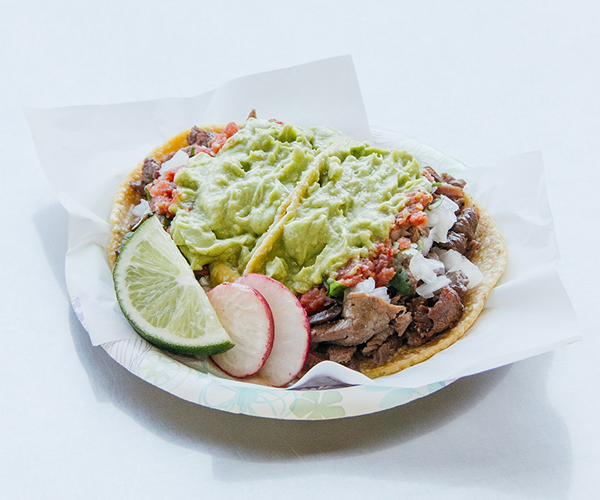

Carne Asada Tacos

Carne Asada Tacos
Ingredients
- 2 pounds (approx. 900 grams) of beef steak (skirt steak or flank steak)
- 1/4 cup of orange juice
- 1/4 cup of lime juice
- 1/4 cup of soy sauce
- 1/4 cup of olive oil
- 4 cloves of garlic, minced
- 1 teaspoon of ground cumin
- 1 teaspoon of chili powder
- 1 teaspoon of paprika
- 1 teaspoon of dried oregano
- Salt and pepper to taste
- Corn or flour tortillas
- Chopped fresh cilantro
- Diced onions
- Sliced avocado or guacamole
- Salsa or hot sauce (optional)
- Lime wedges (for serving)
Steps
- Prepare the marinade by combining orange juice, lime juice, soy sauce, olive oil, minced garlic, ground cumin, chili powder, paprika, dried oregano, salt, and pepper in a bowl.
- Place the beef steak in a shallow dish and pour the marinade over it, ensuring the meat is coated evenly. Cover the dish and refrigerate for at least 1 hour, or overnight for more flavor.
- Preheat your grill or stovetop grill pan over medium-high heat.
- Remove the marinated steak from the dish and discard any excess marinade. Grill the steak for about 4-6 minutes per side, or until desired doneness is reached. Let the steak rest for a few minutes before slicing.
- While the steak is resting, warm up your tortillas on the grill or stovetop.
- Slice the grilled steak into thin strips against the grain.
- Assemble your carne asada tacos by placing the sliced steak onto each warm tortilla.
- Add chopped fresh cilantro, diced onions, sliced avocado or guacamole, and salsa or hot sauce to your liking.
- Squeeze fresh lime juice over the tacos.
- Serve and enjoy your delicious carne asada tacos!